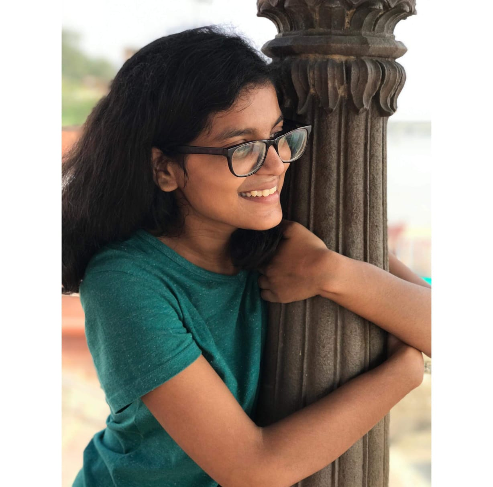

Monika's Portfolio

Monika
Monika is B.Tech student of IIT Kanpur.She love meeting new people.She is paaionate about her work and try to find source of motivation that drives her to do her best.
Project
Python Library for Data visualisation and Evaluation
Created a library that will provide all required visualisation chart for data. Created a library that will provide all required model evaluation metric
Statistical study of bug localization techniques
Ranked 25 metrics, which help in ranking the components of code based on bugginess. Used test-suites for ranking above 25 metrics by assuming flakiness in failing test cases. Compared the metrics using p-values obtained from wilcoxon test and analysed them using visualisation. Analysed the ranking of metrics obtained with assuming flakiness and without flakiness in test suites
Haptic wristband
Fabricated wristbands that help us navigate to given destination using the Haptics nudge provided by bands. Bands were paired with a phone where an Android app processes data received from Google Maps and GPS. Arduino controlled bands containing Wifi module communicated with mobile via serial communication
Have a look on some of my projects
GithubPeople i met
I was a little bit shy and introvert when I joined IIT Kanpur. I was amazed by the view of campus. In my first year I have a course where we have to make video in a group of 4-5. I joined a random group but I am glad that I found the best set of people. Whenever we meet for group meetings I used to be silent as I was introvert and afraid to speak. We made a video for our course. It was just awesome wanna watch. Here is the link.
Our VideoI enjoyed all events held at campus and at the end of my first year I joined the athletics team at IITK. This team is like family. You meet lots of people from different states and different interests. You can discuss with them ,you can take help from them and most importantly By joining this team I learn to open up with people as well as by athletics, I reduced my weight and got back to normal. This team is just awesome. Here are some of the photos of the team.

Then I was able to talk to people freely. I joined FAC (Fine arts club) of IIT Kanpur. There I found a bunch of good people again. And there I found the best senior of my college who made my journey easy at IITK “Sakshi Singh” and “Satyam”. I learnt new things that contribute a lot to my personality. I participated in the Inter IIT Cult meet.

At the end of second year I joined the Student Placement Office. There I meet a new set of people. All are expert in their field and always try to help you out. I remember when I was unclear about my internship I used to ask Yogesh(One of the Placement Coordinator) and he explained to me the whole process and how to prepare over the phone call . They gave us lots of treats as well as insight for our future.

Monika is Final year student in Electrical engeenering at IIT Kanpur. She loves to make new friends and always avilable to talk. Feel free to ping her.